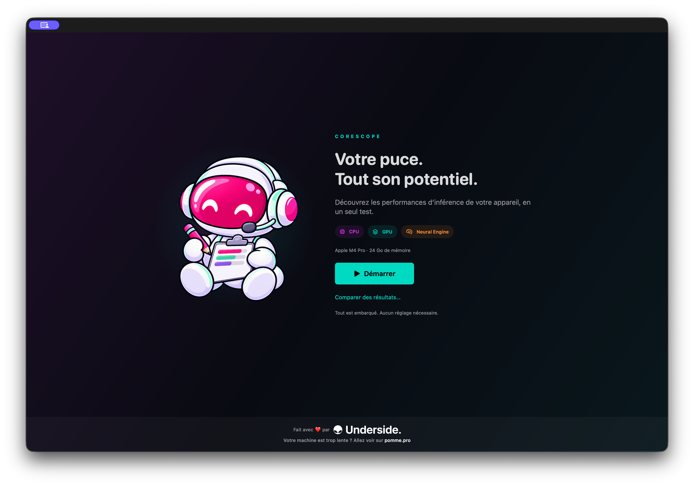
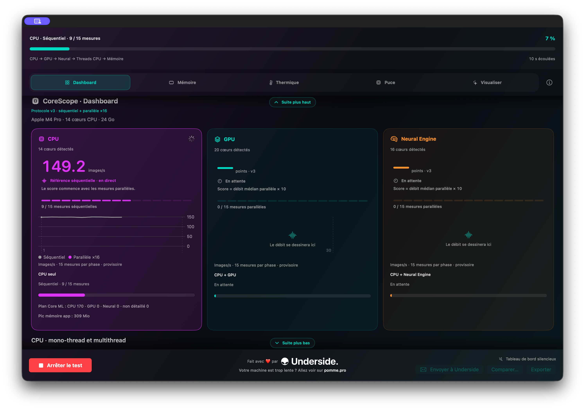
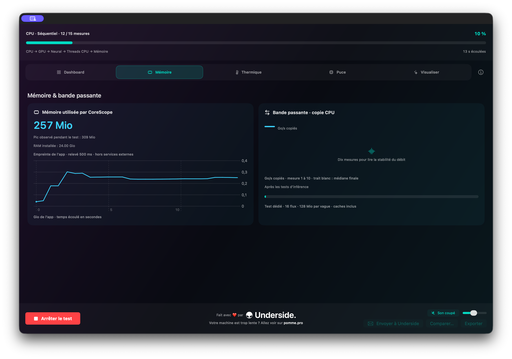
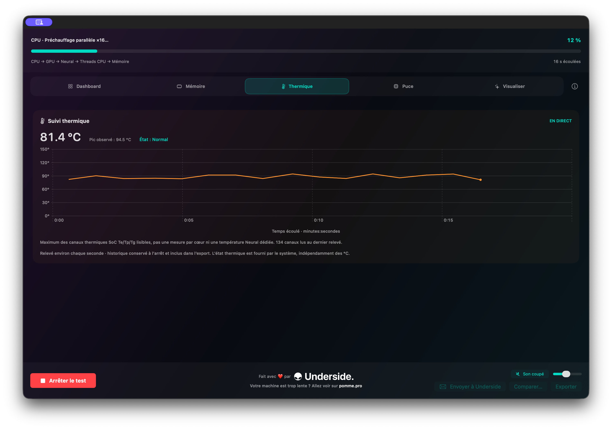
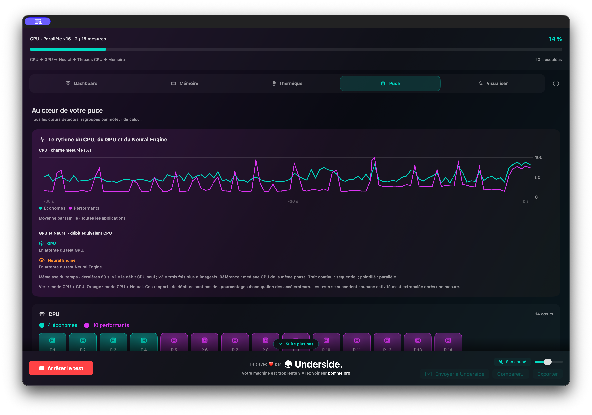
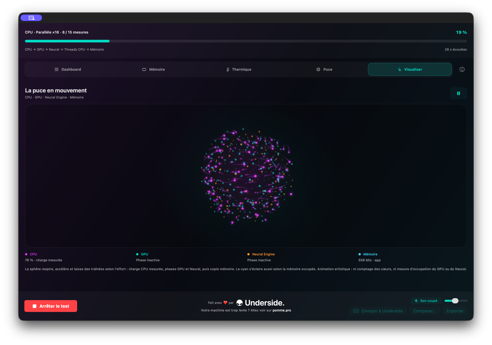

01
Inference throughput
Follow sequential and parallel phases alongside CPU, GPU, and Neural Engine results.
An Underside tool
CoreScope is your Apple Silicon Mac's local AI benchmark. It measures real inference capability across the CPU, GPU, and Neural Engine, then puts memory and thermal behaviour in context in real time.
… downloads started

A benchmark you can read
CoreScope separates the measurements so you can see which resources your Mac uses throughout the benchmark.
Follow sequential and parallel phases alongside CPU, GPU, and Neural Engine results.
Observe the app's memory footprint and memory-copy bandwidth during the benchmark.
Keep temperature and core load in view while the test runs, with an animated activity view.
Inside the app





Ready to measure?
macOS notice: this version uses an ad hoc signature and has not yet been notarized by Apple. After the first launch attempt, go to System Settings → Privacy & Security → Security, click “Open Anyway”, and confirm with your password. The button remains available for around one hour. CoreScope runs only on Apple Silicon Macs with macOS 13.3 or later.